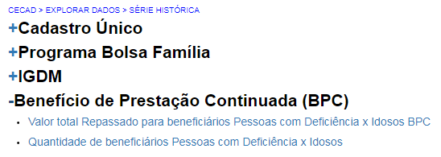

Benefício de prestação continuada (BPC)¶
Na opção Benefício de Prestação Continuada, você terá acesso ao total de famílias beneficiárias cadastradas e não cadastradas no Cadastro Único.
Nessa opção hà dois conjuntos de informações:
- Valor Total Repassado para beneficiários pessoas com deficiência X Idosos BPC: indica os valores totais repassados pelo BPC para pessoas com deficiência e para idosos.
- Quantidade de beneficiários pessoas com deficiência X idosos: indica os quantitativos de pessoas com deficiência e idosas beneficiárias do BPC. Em ambos os conjuntos de informações, podem ser observadas informações da série histórica, maiores e menores valores do país e os maiores e menores valores dos municípios de cada estado brasileiro.